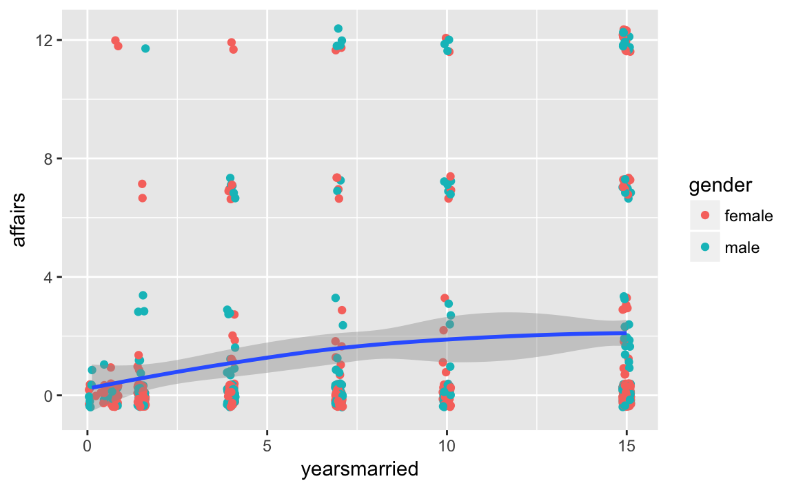

- Vorwort
- 1 Organisatorisches
- 2 Rahmen
- 3 Datenjudo
- 4 Praxisprobleme der Datenaufbereitung
- 4.1 Datenaufbereitung
- 4.1.1 Auf fehlende Werte prüfen
- 4.1.2 Fälle mit fehlenden Werte löschen
- 4.1.3 Fehlende Werte ggf. ersetzen
- 4.1.4 Nach Fehlern suchen
- 4.1.5 Ausreiser identifizieren
- 4.1.6 Hochkorrelierte Variablen finden
- 4.1.7 z-Standardisieren
- 4.1.8 Quasi-Konstante finden
- 4.1.9 Auf Normalverteilung prüfen
- 4.1.10 Werte umkodieren und “binnen”
- 4.2 Deskriptive Statistiken berechnen
- 4.3 Befehlsübersicht
- 4.1 Datenaufbereitung
- 5 Fallstudie zum Datenjudo
- 6 Daten visualisieren
- 7 Fallstudie zur Visualisierung
- 8 Grundlagen des Modellierens
- 8.1 Was ist ein Modell? Was ist Modellieren?
- 8.2 Ein Besipiel zum Modellieren in der Datenanalyse
- 8.3 Taxonomie der Ziele des Modellierens
- 8.4 Die vier Schritte des statistischen Modellierens
- 8.5 Einfache vs. komplexe Modelle: Unter- vs. Überanpassung
- 8.6 Bias-Varianz-Abwägung
- 8.7 Training- vs. Test-Stichprobe
- 8.8 Wann welches Modell?
- 8.9 Modellgüte
- 8.10 Auswahl von Prädiktoren
- 8.11 Aufgaben
- 8.12 Befehlsübersicht
- 8.13 Verweise
- 9 Der p-Wert
- 10 Klassische lineare (numerische) Regression
- 10.1 Einfache Regression
- 10.2 Überprüfung der Annahmen der linearen Regression
- 10.3 Regression mit kategorialen Prädiktoren
- 10.4 Multiple Regression
- 10.5 Inferenz in der linearen Regression
- 10.6 Modellgüte bei Regressionsmodellen
- 10.7 Vertiefungen zum Regressionmodell
- 10.8 Übung: Teaching Rating
- 10.9 Fallstudie zu Overfitting
- 10.10 Literatur
- 11 Klassifizierende Regression
- 11.1 Vorbereitung
- 11.2 Problemstellung
- 11.3 Die Idee der logistischen Regression
- 11.4 Welche Unterschiede zur linearen Regression gibt es in der Ausgabe?
- 11.5 Interpretation der Koeffizienten
- 11.6 Kategoriale Variablen
- 11.7 Multiple logistische Regression
- 11.8 Modell- bzw. Klassifikationsgüte
- 11.9 Vertiefung
- 11.10 Übung: Rot- oder Weißwein?
- 11.11 Literatur
- 12 Fallstudien zum geleiteten Modellieren
- 12.1 Überleben auf der Titanic
- 12.2 Außereheliche Affären
- 12.2.1 Zentrale Statistiken
- 12.2.2 Visualisieren
- 12.2.3 Wer ist zufriedener mit der Partnerschaft: Personen mit Kindern oder ohne?
- 12.2.4 Wie viele fehlende Werte gibt es?
- 12.2.5 Wer ist glücklicher: Männer oder Frauen?
- 12.2.6 Effektstärken
- 12.2.7 Korrelationen
- 12.2.8 Ehejahre und Affären
- 12.2.9 Ehezufriedenheit als Prädiktor
- 12.2.10 Weitere Prädiktoren der Affärenhäufigkeit
- 12.2.11 Unterschied zwischen den Geschlechtern
- 12.2.12 Kinderlose Ehe vs. Ehen mit Kindern
- 12.2.13 Halodries
- 12.2.14 logistische Regression
- 12.2.15 Zum Abschluss
- 12.3 Befehlsübersicht
- 13 Vertiefung: Clusteranalyse
- 14 Probeklausur
- 15 Literaturverzeichnis
- Literaturverzeichnis
12.2 Außereheliche Affären
Wovon ist die Häufigkeit von Affären (Seitensprüngen) in Ehen abhängig? Diese Frage soll anhand des Datensates Affair untersucht werden.
Quelle: http://statsmodels.sourceforge.net/0.5.0/datasets/generated/fair.html
Der Datensatz findet sich (in ähnlicher Form) auch im R-Paket COUNT (https://cran.r-project.org/web/packages/COUNT/index.html).
Laden wir als erstes den Datensatz in R. Wählen Sie zuerst das Verzeichnis als Arbeitsverzeichnis, in dem die Daten liegen. Dann laden Sie z.B. mit dem R-Commander (s. Skript) oder “per Hand” z.B. bei mir so:
Affair <- read.csv("data/Affairs.csv")Schauen wir mal, ob es funktioniert hat (“Datenmatrix betrachten”):
head(Affair)
#> X affairs gender age yearsmarried children religiousness education
#> 1 1 0 male 37 10.00 no 3 18
#> 2 2 0 female 27 4.00 no 4 14
#> 3 3 0 female 32 15.00 yes 1 12
#> 4 4 0 male 57 15.00 yes 5 18
#> 5 5 0 male 22 0.75 no 2 17
#> 6 6 0 female 32 1.50 no 2 17
#> occupation rating
#> 1 7 4
#> 2 6 4
#> 3 1 4
#> 4 6 5
#> 5 6 3
#> 6 5 5Ok scheint zu passen. Was jetzt?
12.2.1 Zentrale Statistiken
Geben Sie zentrale deskriptive Statistiken an für Affärenhäufigkeit und Ehezufriedenheit!
# nicht robust:
mean(Affair$affairs, na.rm = T)
#> [1] 1.46
sd(Affair$affairs, na.rm = T)
#> [1] 3.3
# robust:
median(Affair$affair, na.rm = T)
#> [1] 0
IQR(Affair$affair, na.rm = T)
#> [1] 0Es scheint, die meisten Leute haben keine Affären:
table(Affair$affairs)
#>
#> 0 1 2 3 7 12
#> 451 34 17 19 42 38Man kann sich viele Statistiken mit dem Befehl describe aus psych ausgeben lassen, das ist etwas praktischer:
library(psych)
describe(Affair$affairs)
#> vars n mean sd median trimmed mad min max range skew kurtosis se
#> X1 1 601 1.46 3.3 0 0.55 0 0 12 12 2.34 4.19 0.13
describe(Affair$rating)
#> vars n mean sd median trimmed mad min max range skew kurtosis se
#> X1 1 601 3.93 1.1 4 4.07 1.48 1 5 4 -0.83 -0.22 0.04Dazu muss das Paket psych natürlich vorher installiert sein. Beachten Sie, dass man ein Paket nur einmal installieren muss, aber jedes Mal, wenn Sie R starten, auch starten muss (mit library).
install.packages("psych")12.2.2 Visualisieren
Visualisieren Sie zentrale Variablen!
Sicherlich sind Diagramme auch hilfreich. Dies geht wiederum mit dem R-Commander oder z.B. mit folgenden Befehlen:
library(ggplot2)
qplot(x = affairs, data = Affair)
qplot(x = rating, data = Affair)

Die meisten Menschen (dieser Stichprobe) scheinen mit Ihrer Beziehung sehr zufrieden zu sein.
12.2.3 Wer ist zufriedener mit der Partnerschaft: Personen mit Kindern oder ohne?
Nehmen wir dazu mal ein paar dplyr-Befehle:
library(dplyr)
Affair %>%
group_by(children) %>%
summarise(rating_children = mean(rating, na.rm = T))
#> # A tibble: 2 × 2
#> children rating_children
#> <fctr> <dbl>
#> 1 no 4.27
#> 2 yes 3.80Ah! Kinder sind also ein Risikofaktor für eine Partnerschaft! Gut, dass wir das geklärt haben.
12.2.4 Wie viele fehlende Werte gibt es?
Was machen wir am besten damit?
Diesen Befehl könnten wir für jede Spalte auführen:
sum(is.na(Affair$affairs))
#> [1] 0Oder lieber alle auf einmal:
Affair %>%
summarise_each(funs(sum(is.na(.))))
#> X affairs gender age yearsmarried children religiousness education
#> 1 0 0 0 0 0 0 0 0
#> occupation rating
#> 1 0 0Übrigens gibt es ein gutes Cheat Sheet für dplyr.
Ah, gut, keine fehlenden Werte. Das macht uns das Leben leichter.
12.2.5 Wer ist glücklicher: Männer oder Frauen?
Affair %>%
group_by(gender) %>%
summarise(rating_gender = mean(rating))
#> # A tibble: 2 × 2
#> gender rating_gender
#> <fctr> <dbl>
#> 1 female 3.94
#> 2 male 3.92Praktisch kein Unterschied. Heißt das auch, es gibt keinen Unterschied in der Häufigkeit der Affären?
Affair %>%
group_by(gender) %>%
summarise(affairs_gender = mean(affairs))
#> # A tibble: 2 × 2
#> gender affairs_gender
#> <fctr> <dbl>
#> 1 female 1.42
#> 2 male 1.50Scheint auch kein Unterschied zu sein…
Und zum Abschluss noch mal etwas genauer: Teilen wir mal nach Geschlecht und nach Kinderstatus auf, also in 4 Gruppen. Theoretisch dürfte es hier auch keine Unterschiede/Zusammenhänge geben. Zumindest fällt mir kein sinnvoller Grund ein; zumal die vorherige eindimensionale Analyse keine Unterschiede zu Tage gefördert hat.
Affair %>%
group_by(gender, children) %>%
summarise(affairs_mean = mean(affairs),
rating_mean = mean(rating))
#> Source: local data frame [4 x 4]
#> Groups: gender [?]
#>
#> gender children affairs_mean rating_mean
#> <fctr> <fctr> <dbl> <dbl>
#> 1 female no 0.838 4.40
#> 2 female yes 1.685 3.73
#> 3 male no 1.014 4.10
#> 4 male yes 1.659 3.86
Affair %>%
group_by(children, gender) %>%
summarise(affairs_mean = mean(affairs),
rating_mean = mean(rating))
#> Source: local data frame [4 x 4]
#> Groups: children [?]
#>
#> children gender affairs_mean rating_mean
#> <fctr> <fctr> <dbl> <dbl>
#> 1 no female 0.838 4.40
#> 2 no male 1.014 4.10
#> 3 yes female 1.685 3.73
#> 4 yes male 1.659 3.8612.2.6 Effektstärken
Berichten Sie eine relevante Effektstärke!
Hm, auch keine gewaltigen Unterschiede. Höchstens für die Zufriedenheit mit der Partnerschaft bei kinderlosen Personen scheinen sich Männer und Frauen etwas zu unterscheiden. Hier stellt sich die Frage nach der Größe des Effekts, z.B. anhand Cohen’s d. Dafür müssen wir noch die SD pro Gruppe wissen:
Affair %>%
group_by(children, gender) %>%
summarise(rating_mean = mean(rating),
rating_sd = sd(rating))
#> Source: local data frame [4 x 4]
#> Groups: children [?]
#>
#> children gender rating_mean rating_sd
#> <fctr> <fctr> <dbl> <dbl>
#> 1 no female 4.40 0.914
#> 2 no male 4.10 1.064
#> 3 yes female 3.73 1.183
#> 4 yes male 3.86 1.046d <- (4.4 - 4.1)/(1)Die Effektstärke beträgt etwa 0.3.
12.2.7 Korrelationen
Berechnen und visualisieren Sie zentrale Korrelationen!
Affair %>%
select_if(is.numeric) %>%
cor -> cor_tab
cor_tab
#> X affairs age yearsmarried religiousness
#> X 1.0000 0.57692 0.0362 0.1078 -0.1164
#> affairs 0.5769 1.00000 0.0952 0.1868 -0.1445
#> age 0.0362 0.09524 1.0000 0.7775 0.1938
#> yearsmarried 0.1078 0.18684 0.7775 1.0000 0.2183
#> religiousness -0.1164 -0.14450 0.1938 0.2183 1.0000
#> education -0.0537 -0.00244 0.1346 0.0400 -0.0426
#> occupation -0.0691 0.04961 0.1664 0.0446 -0.0397
#> rating -0.1951 -0.27951 -0.1990 -0.2431 0.0243
#> education occupation rating
#> X -0.05371 -0.0691 -0.1951
#> affairs -0.00244 0.0496 -0.2795
#> age 0.13460 0.1664 -0.1990
#> yearsmarried 0.04000 0.0446 -0.2431
#> religiousness -0.04257 -0.0397 0.0243
#> education 1.00000 0.5336 0.1093
#> occupation 0.53361 1.0000 0.0174
#> rating 0.10930 0.0174 1.0000
library(corrplot)
corrplot(cor_tab)
12.2.8 Ehejahre und Affären
Wie groß ist der Einfluss (das Einflussgewicht) der Ehejahre bzw. Ehezufriedenheit auf die Anzahl der Affären?
Dazu sagen wir R: “Hey R, rechne mal ein lineares Modell”, also eine normale (lineare) Regression. Dazu können wir entweder das entsprechende Menü im R-Commander auswählen, oder folgende R-Befehle ausführen:
lm1 <- lm(affairs ~ yearsmarried, data = Affair)
summary(lm1) # Ergebnisse der Regression zeigen
#>
#> Call:
#> lm(formula = affairs ~ yearsmarried, data = Affair)
#>
#> Residuals:
#> Min 1Q Median 3Q Max
#> -2.211 -1.658 -0.994 -0.597 11.366
#>
#> Coefficients:
#> Estimate Std. Error t value Pr(>|t|)
#> (Intercept) 0.5512 0.2351 2.34 0.019 *
#> yearsmarried 0.1106 0.0238 4.65 4e-06 ***
#> ---
#> Signif. codes: 0 '***' 0.001 '**' 0.01 '*' 0.05 '.' 0.1 ' ' 1
#>
#> Residual standard error: 3.24 on 599 degrees of freedom
#> Multiple R-squared: 0.0349, Adjusted R-squared: 0.0333
#> F-statistic: 21.7 on 1 and 599 DF, p-value: 4e-06
lm2 <- lm(affairs ~ rating, data = Affair)
summary(lm2)
#>
#> Call:
#> lm(formula = affairs ~ rating, data = Affair)
#>
#> Residuals:
#> Min 1Q Median 3Q Max
#> -3.906 -1.399 -0.563 -0.563 11.437
#>
#> Coefficients:
#> Estimate Std. Error t value Pr(>|t|)
#> (Intercept) 4.742 0.479 9.90 <2e-16 ***
#> rating -0.836 0.117 -7.12 3e-12 ***
#> ---
#> Signif. codes: 0 '***' 0.001 '**' 0.01 '*' 0.05 '.' 0.1 ' ' 1
#>
#> Residual standard error: 3.17 on 599 degrees of freedom
#> Multiple R-squared: 0.0781, Adjusted R-squared: 0.0766
#> F-statistic: 50.8 on 1 and 599 DF, p-value: 3e-12Also: yearsmarried und rating sind beide statistisch signifikante Prädiktoren für die Häufigkeit von Affären. Das adjustierte \(R^2\) ist allerdings in beiden Fällen nicht so groß.
12.2.9 Ehezufriedenheit als Prädiktor
Um wie viel erhöht sich die erklärte Varianz (R-Quadrat) von Affärenhäufigkeit wenn man den Prädiktor Ehezufriedenheit zum Prädiktor Ehejahre hinzufügt? (Wie) verändern sich die Einflussgewichte (b)?
lm3 <- lm(affairs ~ rating + yearsmarried, data = Affair)
lm4 <- lm(affairs ~ yearsmarried + rating, data = Affair)
summary(lm3)
#>
#> Call:
#> lm(formula = affairs ~ rating + yearsmarried, data = Affair)
#>
#> Residuals:
#> Min 1Q Median 3Q Max
#> -4.147 -1.650 -0.837 -0.162 11.894
#>
#> Coefficients:
#> Estimate Std. Error t value Pr(>|t|)
#> (Intercept) 3.7691 0.5671 6.65 6.8e-11 ***
#> rating -0.7439 0.1200 -6.20 1.1e-09 ***
#> yearsmarried 0.0748 0.0238 3.15 0.0017 **
#> ---
#> Signif. codes: 0 '***' 0.001 '**' 0.01 '*' 0.05 '.' 0.1 ' ' 1
#>
#> Residual standard error: 3.15 on 598 degrees of freedom
#> Multiple R-squared: 0.0931, Adjusted R-squared: 0.0901
#> F-statistic: 30.7 on 2 and 598 DF, p-value: 2.01e-13
summary(lm4)
#>
#> Call:
#> lm(formula = affairs ~ yearsmarried + rating, data = Affair)
#>
#> Residuals:
#> Min 1Q Median 3Q Max
#> -4.147 -1.650 -0.837 -0.162 11.894
#>
#> Coefficients:
#> Estimate Std. Error t value Pr(>|t|)
#> (Intercept) 3.7691 0.5671 6.65 6.8e-11 ***
#> yearsmarried 0.0748 0.0238 3.15 0.0017 **
#> rating -0.7439 0.1200 -6.20 1.1e-09 ***
#> ---
#> Signif. codes: 0 '***' 0.001 '**' 0.01 '*' 0.05 '.' 0.1 ' ' 1
#>
#> Residual standard error: 3.15 on 598 degrees of freedom
#> Multiple R-squared: 0.0931, Adjusted R-squared: 0.0901
#> F-statistic: 30.7 on 2 and 598 DF, p-value: 2.01e-13Ok. Macht eigentlich die Reihenfolge der Prädiktoren in der Regression einen Unterschied? Der Vergleich von Modell 3 vs. Modell 4 beantwortet diese Frage.
Wir sehen, dass beim 1. Regressionsmodell das R^2 0.03 war; beim 2. Modell 0.08 und beim 3. Modell liegt R^2 bei 0.09. Die Differenz zwischen Modell 1 und 3 liegt bei (gerundet) 0.06; wenig.
12.2.10 Weitere Prädiktoren der Affärenhäufigkeit
Welche Prädiktoren würden Sie noch in die Regressionsanalyse aufnehmen?
Hm, diese Frage klingt nicht so, als ob der Dozent die Antwort selber wüsste… Naja, welche Variablen gibt es denn alles:
#> [1] "X" "affairs" "gender" "age"
#> [5] "yearsmarried" "children" "religiousness" "education"
#> [9] "occupation" "rating"Z.B. wäre doch interessant, ob Ehen mit Kinder mehr oder weniger Seitensprüngen aufweisen. Und ob die “Kinderfrage” die anderen Zusammenhänge/Einflussgewichte in der Regression verändert. Probieren wir es auch. Wir können wiederum im R-Comamnder ein Regressionsmodell anfordern oder es mit der Syntax probieren:
lm5 <- lm(affairs~ rating + yearsmarried + children, data = Affair)
summary(lm5)
#>
#> Call:
#> lm(formula = affairs ~ rating + yearsmarried + children, data = Affair)
#>
#> Residuals:
#> Min 1Q Median 3Q Max
#> -4.354 -1.732 -0.893 -0.172 12.016
#>
#> Coefficients:
#> Estimate Std. Error t value Pr(>|t|)
#> (Intercept) 3.8524 0.5881 6.55 1.2e-10 ***
#> rating -0.7486 0.1204 -6.22 9.6e-10 ***
#> yearsmarried 0.0833 0.0285 2.92 0.0036 **
#> childrenyes -0.1881 0.3482 -0.54 0.5893
#> ---
#> Signif. codes: 0 '***' 0.001 '**' 0.01 '*' 0.05 '.' 0.1 ' ' 1
#>
#> Residual standard error: 3.15 on 597 degrees of freedom
#> Multiple R-squared: 0.0936, Adjusted R-squared: 0.089
#> F-statistic: 20.5 on 3 and 597 DF, p-value: 1.11e-12
r2_lm5 <- summary(lm5)$r.squaredDas Regressionsgewicht von childrenyes ist negativ. Das bedeutet, dass Ehen mit Kindern weniger Affären verbuchen (aber geringe Zufriedenheit, wie wir oben gesehen haben! Hrks!). Allerdings ist der p-Wert nich signifikant, was wir als Zeichen der Unbedeutsamkeit dieses Prädiktors verstehen können. \(R^2\) lungert immer noch bei mickrigen 0.094 herum. Wir haben bisher kaum verstanden, wie es zu Affären kommt. Oder unsere Daten bergen diese Informationen einfach nicht.
Wir könnten auch einfach mal Prädiktoren, die wir haben, ins Feld schicken. Mal sehen, was dann passiert:
lm6 <- lm(affairs ~ ., data = Affair)
summary(lm6)
#>
#> Call:
#> lm(formula = affairs ~ ., data = Affair)
#>
#> Residuals:
#> Min 1Q Median 3Q Max
#> -5.162 -1.644 -0.484 1.016 9.509
#>
#> Coefficients:
#> Estimate Std. Error t value Pr(>|t|)
#> (Intercept) 0.612898 1.008088 0.61 0.54343
#> X 0.010085 0.000634 15.92 < 2e-16 ***
#> gendermale -0.222695 0.252198 -0.88 0.37759
#> age -0.029519 0.018987 -1.55 0.12054
#> yearsmarried 0.120077 0.034656 3.46 0.00057 ***
#> childrenyes -0.357956 0.293529 -1.22 0.22314
#> religiousness -0.272637 0.094432 -2.89 0.00403 **
#> education 0.001544 0.053711 0.03 0.97708
#> occupation 0.182340 0.074579 2.44 0.01478 *
#> rating -0.456198 0.101757 -4.48 8.8e-06 ***
#> ---
#> Signif. codes: 0 '***' 0.001 '**' 0.01 '*' 0.05 '.' 0.1 ' ' 1
#>
#> Residual standard error: 2.59 on 591 degrees of freedom
#> Multiple R-squared: 0.392, Adjusted R-squared: 0.383
#> F-statistic: 42.4 on 9 and 591 DF, p-value: <2e-16
r2_lm6 <- round(summary(lm6)$r.squared, 2)Der “.” im Befehl affairs ~ . oben soll sagen: nimm “alle Variablen, die noch in der Datenmatrix übrig sind”.
Insgesamt bleibt die erklärte Varian in sehr bescheidenem Rahmen: 0.39. Das zeigt uns, dass es immer noch nur schlecht verstanden ist – im Rahmen dieser Analyse – welche Faktoren die Affärenhäufigkeit erklärt.
12.2.11 Unterschied zwischen den Geschlechtern
Unterscheiden sich die Geschlechter statistisch signifikant? Wie groß ist der Unterschied? Sollte hierlieber das d-Maß oder Rohwerte als Effektmaß angegeben werden?
Hier bietet sich ein t-Test für unabhängige Gruppen an. Die Frage lässt auf eine ungerichtete Hypothese schließen (\(\alpha\) sei .05). Mit dem entsprechenden Menüpunkt im R-Commander oder mit folgender Syntax lässt sich diese Analyse angehen:
t1 <- t.test(affairs ~ gender, data = Affair)
t1
#>
#> Welch Two Sample t-test
#>
#> data: affairs by gender
#> t = -0.3, df = 600, p-value = 0.8
#> alternative hypothesis: true difference in means is not equal to 0
#> 95 percent confidence interval:
#> -0.607 0.452
#> sample estimates:
#> mean in group female mean in group male
#> 1.42 1.50Der p-Wert ist mit 0.774 > \(\alpha\). Daher wird die \(H_0\) beibehalten. Auf Basis der Stichprobendaten entscheiden wir uns für die \(H_0\). Entsprechend umschließt das 95%-KI die Null.
Da die Differenz nicht signifikant ist, kann argumentiert werden, dass wir d auf 0 schätzen müssen. Man kann sich den d-Wert auch z.B. von {MBESS} schätzen lassen.
Dafür brauchen wir die Anzahl an Männer und Frauen: 315, 286.
library(MBESS)
ci.smd(ncp = t1$statistic,
n.1 = 315,
n.2 = 286)
#> $Lower.Conf.Limit.smd
#> [1] -0.184
#>
#> $smd
#> t
#> -0.0235
#>
#> $Upper.Conf.Limit.smd
#> [1] 0.137Das Konfidenzintervall ist zwar relativ klein (die Schätzung also aufgrund der recht großen Stichprobe relativ präzise), aber der Schätzwert für d smd liegt sehr nahe bei Null. Das stärkt unsere Entscheidung, von einer Gleichheit der Populationen (Männer vs. Frauen) auszugehen.
12.2.12 Kinderlose Ehe vs. Ehen mit Kindern
Rechnen Sie die Regressionsanalyse getrennt für kinderlose Ehe und Ehen mit Kindern!
Hier geht es im ersten Schritt darum, die entsprechenden Teil-Mengen der Datenmatrix zu erstellen. Das kann man natürlich mit Excel o.ä. tun. Alternativ könnte man es in R z.B. so machen:
Affair2 <- Affair[Affair$children == "yes", ]
lm7 <- lm(affairs~ rating, data = Affair2)
summary(lm7)
#>
#> Call:
#> lm(formula = affairs ~ rating, data = Affair2)
#>
#> Residuals:
#> Min 1Q Median 3Q Max
#> -4.190 -1.488 -0.587 -0.488 11.413
#>
#> Coefficients:
#> Estimate Std. Error t value Pr(>|t|)
#> (Intercept) 5.091 0.570 8.93 < 2e-16 ***
#> rating -0.901 0.144 -6.25 9.8e-10 ***
#> ---
#> Signif. codes: 0 '***' 0.001 '**' 0.01 '*' 0.05 '.' 0.1 ' ' 1
#>
#> Residual standard error: 3.34 on 428 degrees of freedom
#> Multiple R-squared: 0.0837, Adjusted R-squared: 0.0815
#> F-statistic: 39.1 on 1 and 428 DF, p-value: 9.84e-10
Affair3 <- Affair[Affair$children == "no", ]
lm8 <- lm(affairs~ rating, data = Affair3)
summary(lm8)
#>
#> Call:
#> lm(formula = affairs ~ rating, data = Affair3)
#>
#> Residuals:
#> Min 1Q Median 3Q Max
#> -2.55 -1.05 -0.55 -0.55 11.45
#>
#> Coefficients:
#> Estimate Std. Error t value Pr(>|t|)
#> (Intercept) 3.045 0.914 3.33 0.0011 **
#> rating -0.499 0.208 -2.40 0.0177 *
#> ---
#> Signif. codes: 0 '***' 0.001 '**' 0.01 '*' 0.05 '.' 0.1 ' ' 1
#>
#> Residual standard error: 2.68 on 169 degrees of freedom
#> Multiple R-squared: 0.0328, Adjusted R-squared: 0.0271
#> F-statistic: 5.74 on 1 and 169 DF, p-value: 0.0177Übrigens, einfacher geht das “Subsetten” so:
library(dplyr)
Affair4 <- filter(Affair, children == "yes")
head(Affair4)
#> X affairs gender age yearsmarried children religiousness education
#> 1 3 0 female 32 15 yes 1 12
#> 2 4 0 male 57 15 yes 5 18
#> 3 8 0 male 57 15 yes 2 14
#> 4 9 0 female 32 15 yes 4 16
#> 5 11 0 male 37 15 yes 2 20
#> 6 12 0 male 27 4 yes 4 18
#> occupation rating
#> 1 1 4
#> 2 6 5
#> 3 4 4
#> 4 1 2
#> 5 7 2
#> 6 6 412.2.13 Halodries
Rechnen Sie die Regression nur für “Halodries”; d.h. für Menschen mit Seitensprüngen. Dafür müssen Sie alle Menschen ohne Affären aus den Datensatz entfernen.
Also, rechnen wir nochmal die Standardregression (lm1). Probieren wir den Befehl filter dazu nochmal aus:
Affair5 <- filter(Affair, affairs != 0)
lm9 <- lm(affairs ~ rating, data = Affair5)
summary(lm9)
#>
#> Call:
#> lm(formula = affairs ~ rating, data = Affair5)
#>
#> Residuals:
#> Min 1Q Median 3Q Max
#> -6.06 -3.52 -0.06 3.69 7.48
#>
#> Coefficients:
#> Estimate Std. Error t value Pr(>|t|)
#> (Intercept) 8.757 1.023 8.56 1.3e-14 ***
#> rating -0.848 0.280 -3.03 0.0029 **
#> ---
#> Signif. codes: 0 '***' 0.001 '**' 0.01 '*' 0.05 '.' 0.1 ' ' 1
#>
#> Residual standard error: 4.14 on 148 degrees of freedom
#> Multiple R-squared: 0.0584, Adjusted R-squared: 0.052
#> F-statistic: 9.18 on 1 and 148 DF, p-value: 0.0028912.2.14 logistische Regression
Berechnen Sie für eine logistische Regression mit “Affäre ja vs. nein” als Kriterium, wie stark der Einfluss von Geschlecht, Kinderstatus, Ehezufriedenheit und Ehedauer ist!
Affair %>%
mutate(affairs_dichotom = if_else(affairs == 0, 0, 1)) %>%
glm(affairs_dichotom ~gender + children + rating + yearsmarried, data = ., family = "binomial") -> lm10
summary(lm10)
#>
#> Call:
#> glm(formula = affairs_dichotom ~ gender + children + rating +
#> yearsmarried, family = "binomial", data = .)
#>
#> Deviance Residuals:
#> Min 1Q Median 3Q Max
#> -1.420 -0.764 -0.617 -0.443 2.171
#>
#> Coefficients:
#> Estimate Std. Error z value Pr(>|z|)
#> (Intercept) 0.0537 0.4299 0.12 0.90
#> gendermale 0.2416 0.1966 1.23 0.22
#> childrenyes 0.3935 0.2831 1.39 0.16
#> rating -0.4654 0.0874 -5.33 1e-07 ***
#> yearsmarried 0.0221 0.0212 1.04 0.30
#> ---
#> Signif. codes: 0 '***' 0.001 '**' 0.01 '*' 0.05 '.' 0.1 ' ' 1
#>
#> (Dispersion parameter for binomial family taken to be 1)
#>
#> Null deviance: 675.38 on 600 degrees of freedom
#> Residual deviance: 630.26 on 596 degrees of freedom
#> AIC: 640.3
#>
#> Number of Fisher Scoring iterations: 4Wenn if_else unbekannt ist, lohnt sich ein Blick in die Hilfe mit ?if_else (dplyr muss vorher geladen sein).
Aha, signifikant ist die Ehezufriedenheit: Je größer rating desto geringer die Wahrscheinlickeit für affairs_dichotom. Macht Sinn!
Übrigens, die Funktion lm und glm spucken leider keine brave Tabelle in Normalform aus. Aber man leicht eine schöne Tabelle (data.frame) bekommen mit dem Befehl tidy aus broom:
library(broom)
tidy(lm10)
#> term estimate std.error statistic p.value
#> 1 (Intercept) 0.0537 0.4299 0.125 9.01e-01
#> 2 gendermale 0.2416 0.1966 1.229 2.19e-01
#> 3 childrenyes 0.3935 0.2831 1.390 1.64e-01
#> 4 rating -0.4654 0.0874 -5.327 9.97e-08
#> 5 yearsmarried 0.0221 0.0212 1.040 2.99e-01Und Tabellen (d.h. brave Dataframes) kann man sich schön ausgeben lassen z.B. mit dem Befehl knitr::kable:
library(knitr)
tidy(lm10) %>% kable| term | estimate | std.error | statistic | p.value |
|---|---|---|---|---|
| (Intercept) | 0.054 | 0.430 | 0.125 | 0.901 |
| gendermale | 0.242 | 0.197 | 1.229 | 0.219 |
| childrenyes | 0.394 | 0.283 | 1.390 | 0.164 |
| rating | -0.465 | 0.087 | -5.327 | 0.000 |
| yearsmarried | 0.022 | 0.021 | 1.040 | 0.299 |
12.2.15 Zum Abschluss
Visualisieren wir mal was!
Ok, wie wäre es damit:
Affair %>%
select(affairs, gender, children, rating) %>%
ggplot(aes(x = affairs, y = rating)) + geom_jitter(aes(color = gender, shape = children)) 
Affair %>%
mutate(rating_dichotom = ntile(rating, 2)) %>%
ggplot(aes(x = yearsmarried, y = affairs)) + geom_jitter(aes(color = gender)) +
geom_smooth()
Puh. Geschafft!